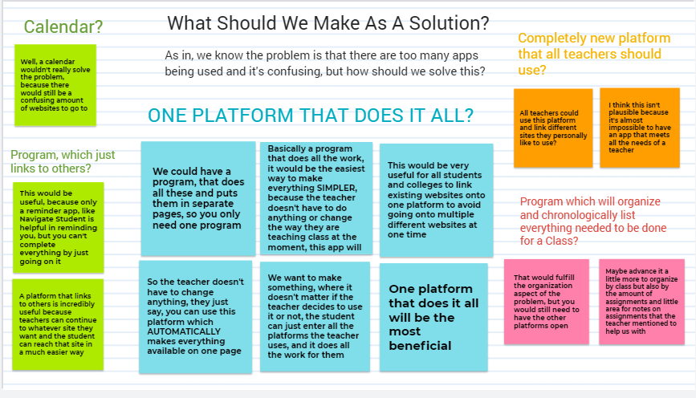
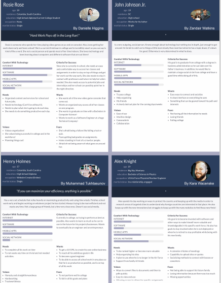
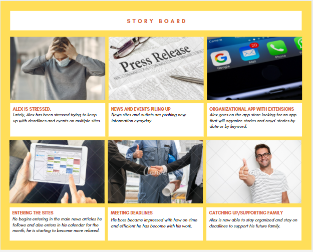
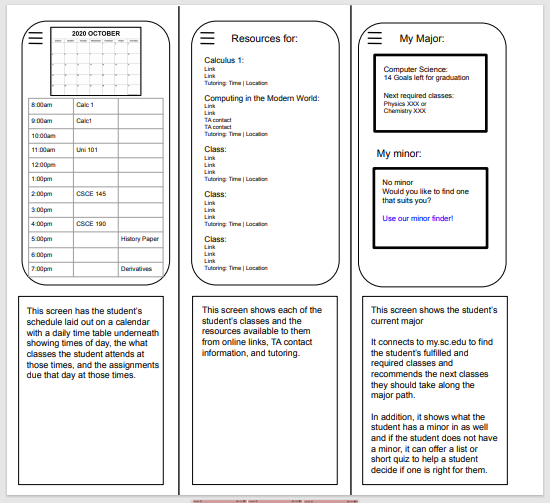
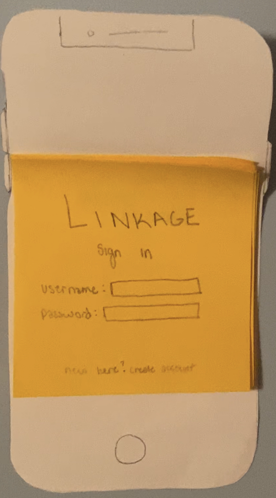

Kara Wacenske's CSCE site

Problem Statement
Teachers have switched their classes to be hybrid or online and have chosen to use their comfortable choice of apps or websites as a result of the virus of Covid-19; due to this students are drowning in work and deadlines as usual but with the added factor of many sites. Professors and teachers only visit one while students juggle many classes and sites along with multiple deadlines daily. Our solution is to organize these sites and make it more efficient and effective for everyone!

Affinity Diagram
My group and I brainstormed ideas on how to solve our problem with multiple statements.

Personas
My group and I each made a persona on how they would use our software. We each took the time to show how they would use the software given their jobs or lives.

Storyboards
We each made our own story board using our persona from the assignment before in order to explain how someone might use our software.

Sketches
We each made a sketch of how we wanted the app to look like and we all chose Zandair's.

Paper Prototype
I have made a paper prototype on how I think our app linkage should work.